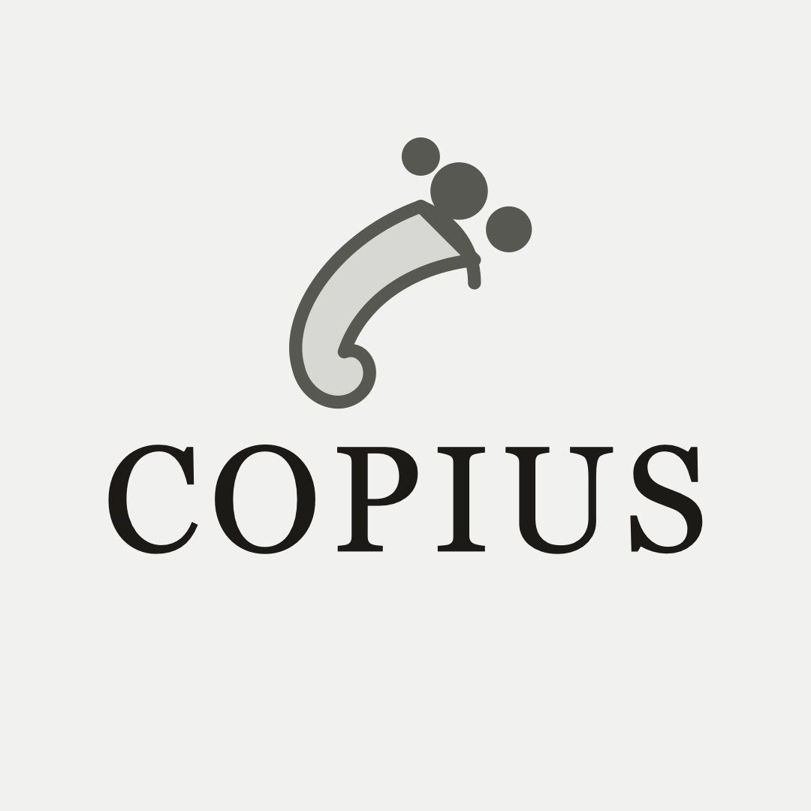
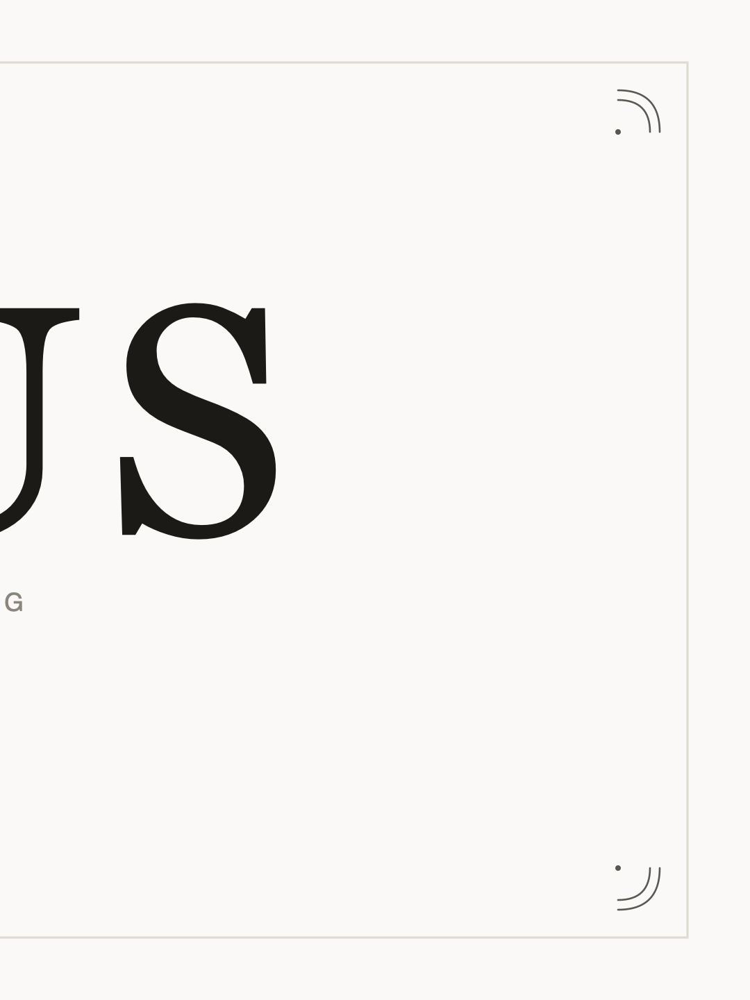
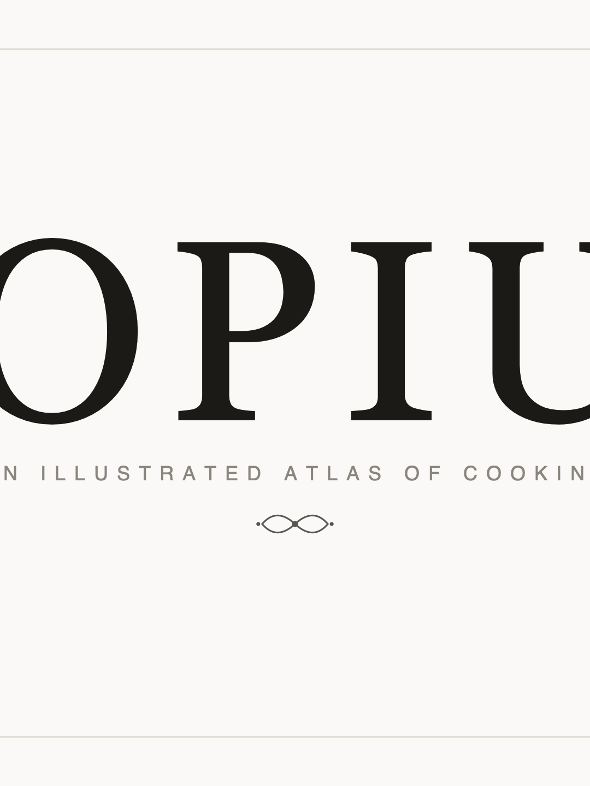
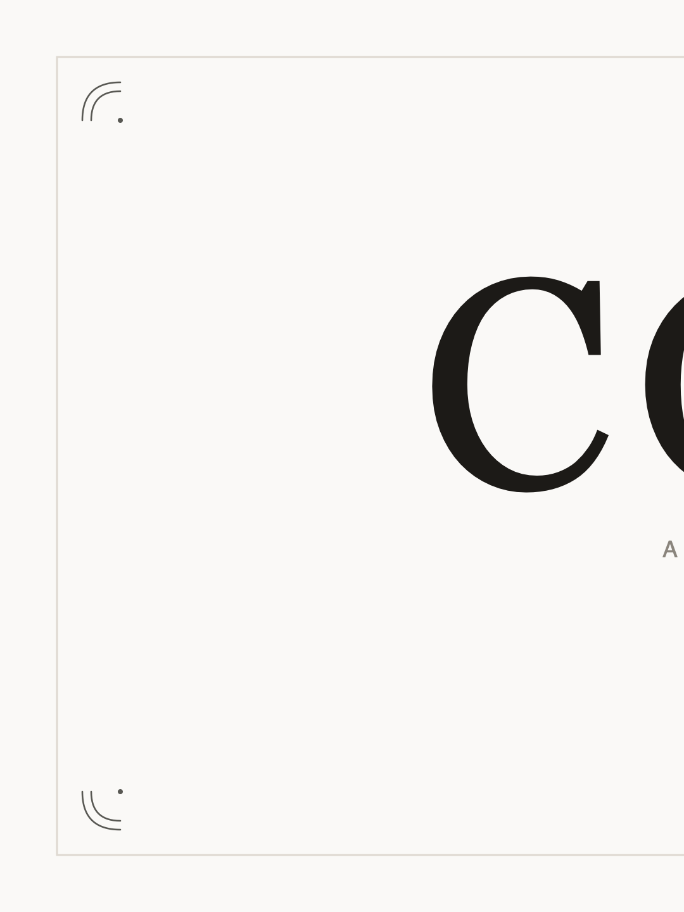
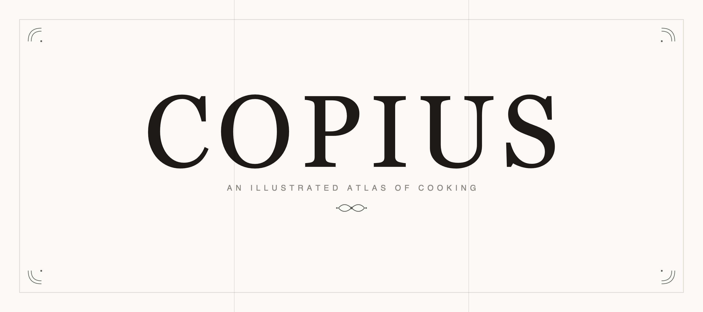

Long-press any image to save it to your camera roll.
1080×1080. Centred on the mark so the circular crop clips nothing.

Post in the numbered order — the profile grid fills newest-first, so the right-hand panel is published first. Then pin all three. Get it backwards and the wordmark reads reversed.




138 characters of 150. Each line opens with the flag of the language it is in.
🇬🇧 Illustrated atlas of cooking — 1,800+ ingredients, 130+ techniques, 55+ dishes
🇫🇷 Atlas illustré de la cuisine
✉️ contact@copius.fr
Link field: https://copius.fr